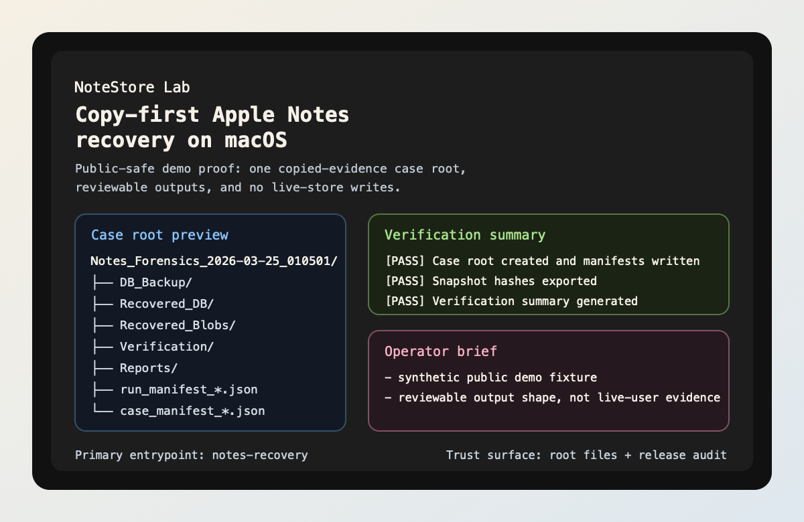

notes-recovery demo
See one public-safe, timestamped case root with recovery, verification, report, and review artifacts before you touch a real copied case.
apple-notes-forensics
NoteStore Lab is a macOS Apple Notes recovery and review toolkit built around copied case roots, reviewable outputs, bounded AI assistance, and a local read-mostly MCP surface. The first story is the operator story: prove the workflow shape, inspect the artifacts, and confirm the host boundary. Builder integrations come after that.
Run these in order. The sequence is the product story, not just a checklist.
notes-recovery demo
See the case-root shape before touching a real copied-evidence run.
notes-recovery ai-review --demo
Watch AI stay on derived artifacts instead of pretending to be the recovery engine.
notes-recovery ask-case --demo --question "What should I inspect first?"
Ask one bounded question and inspect the cited evidence refs.
notes-recovery doctor
Only then decide whether this host is ready for a real copied-evidence run.

Demo, triage, question, doctor. That path should make sense before any builder wrapper enters the story.
Manifests, summaries, verification previews, and reports remain the center of gravity.
This is the shortest path from “I just arrived” to “I now trust what this repo is trying to do”.
notes-recovery demo
See one public-safe, timestamped case root with recovery, verification, report, and review artifacts before you touch a real copied case.
notes-recovery ai-review --demo
Generate a synthetic triage summary, top findings, next questions, and artifact priority from derived demo artifacts instead of raw private data.
notes-recovery ask-case --demo ...
Ask one bounded question and get an answer with evidence refs, confidence, uncertainty, and next inspection targets from the same review-safe surface.
notes-recovery doctor
Confirm the host boundary, optional surfaces, and the safest next step before you point the toolkit at a real copied-evidence run.
The front door gets easier when it acts like an evidence desk. Pick the question you arrived with, then take the shortest route built for that question instead of wandering through README, proof, and builder pages in random order.
Stay on the proof path first: demo, AI review, bounded question, then doctor.
Use the use-case map when you need to separate operator review, AI triage, MCP consumption, and case comparison.
Only after the case-root story feels real should you open the Codex / Claude Code wrapper examples and MCP entrypoint guidance.
This repo works best when it feels like a guided exhibit: the operator story comes first, the AI story sharpens it, and the builder lane only opens after the case-root workflow already feels real.
Stay on the public-safe case-root story first. The goal is to understand one workflow, one boundary, and one review surface before you think about integrations.
The product gets stronger when the same case root supports human review, bounded AI help, and local agents without opening a second data plane.
Start with demo, ai-review --demo,
ask-case --demo, then doctor. The repo
leaves behind manifests, verification previews, timelines,
reports, and one review index instead of ad hoc files.
ai-review and ask-case sit on derived
artifacts first. They rank what to inspect next, cite evidence, and
keep the recovery engine separate from the explanation layer.
The MCP surface stays local stdio-first, read-mostly,
and case-root-centric. That makes it easy to reuse the same review
substrate without inventing a hosted platform.
Once the first success path lands, these are the three surfaces that stop the repo from feeling hand-wavy: proof, listing truth, and the support contract.
See the exact repo-side proof, remote read-back proof, and the manual external tail that still lives in GitHub Settings or platform controls.
Check which registry and plugin surfaces are shipped, public-ready, or still waiting on official listing read-back.
Use the issue route, required report details, and support boundary without guessing which surface the maintainer actually supports.
| Category | Digital forensics and evidence review for copied Apple Notes case roots. |
|---|---|
| AI / agent hook | AI-assisted triage, evidence-backed case Q&A, and a local MCP surface that works with Codex / Claude Code style local-agent workflows. |
| Result | Recover, inspect, question, compare, and safely hand off reviewable outputs without pretending the repo is a hosted autonomy platform. |
Once the operator path is clear, register the shipped stdio MCP entrypoint and point it at a real case root.
.venv/bin/python -m notes_recovery.mcp.server --case-dir ./output/Notes_Forensics_<run_ts>
.codex/config.toml and project .mcp.json
wrapper examples for this shipped local stdio command.
Use the project .codex/config.toml shape and keep the
path base honest.
[mcp_servers.notestorelab]
command = "../.venv/bin/python"
args = [
"-m",
"notes_recovery.mcp.server",
"--case-dir",
"./output/Notes_Forensics_<run_ts>",
]
cwd = ".."
Use the project .mcp.json shape and point it at the
same shipped local stdio command.
{
"mcpServers": {
"notestorelab": {
"command": ".venv/bin/python",
"args": [
"-m",
"notes_recovery.mcp.server",
"--case-dir",
"./output/Notes_Forensics_<run_ts>"
]
}
}
}| Claude Code | Good fit for the shipped local stdio MCP contract and case-root-centric workflow. |
|---|---|
| Codex | Good fit for the same local stdio MCP contract. Carry the executable command into the host wrapper you use. |
| ChatGPT developer mode | Comparison path only. This repo does not ship a hosted or remote MCP deployment. |
| OpenClaw-style hosts | Compatible bundle path now shipped. Reuse the same local MCP command and the bundled archive build, but do not treat the live secondary ClawHub skill listing as proof of a first-class OpenClaw wrapper or bundle listing. |
demo, run
ask-case --demo, then register the exact
notes_recovery.mcp.server command against one case root.
These are the product signals that make the repo feel real once the first proof path has landed.
The repo gives you one case root, one review index, and one set of review-safe artifacts. You can inspect the outputs first and then let AI or MCP consume the same surfaces.
The workflow stays on macOS, on copies, and on local
stdio-first tooling. That is a strong fit for
developers who want traceable behavior instead of hosted magic.
ai-review, ask-case, and the MCP server
are already shipped. They are not roadmap placeholders or vague AI
branding layers.
No hosted API, no generated client, no generic agent platform promise. The repo is attractive precisely because the boundaries are sharp and the proof is easy to audit.
Think of this as the shelf behind the front desk: operator path first, then deeper truth, then builder and support surfaces.